Open a member sub-account success
Run gate-value-ceiling-under · capability v1.0.0
Outputs
| referenceNumber | "SUB-MU640TX1" |
| accountNumber | "0010-2721" |
15
steps
0
retries
0
recoveries
0
degraded
0
interventions
4.1s
duration
0
model calls
Model calls are zero by construction on the replay path: the module is forbidden from importing a model SDK, a source scan re-checks it, and this counter is asserted in the test suite. Determinism that is only promised is not determinism.
Steps
1. Open the banking console ok


2. Enter operator ID ok


3. Enter operator password ok
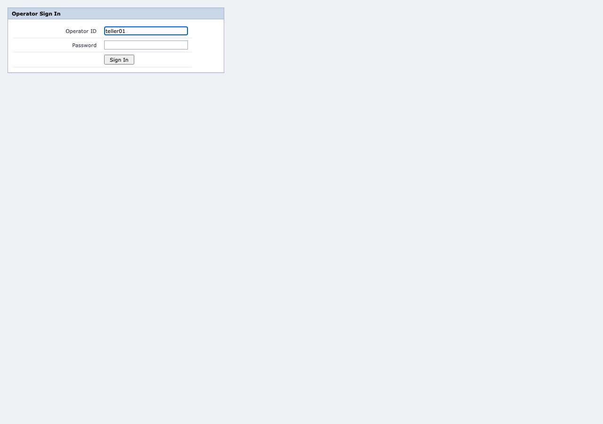

4. Sign in to the console ok


5. Search for the member ok
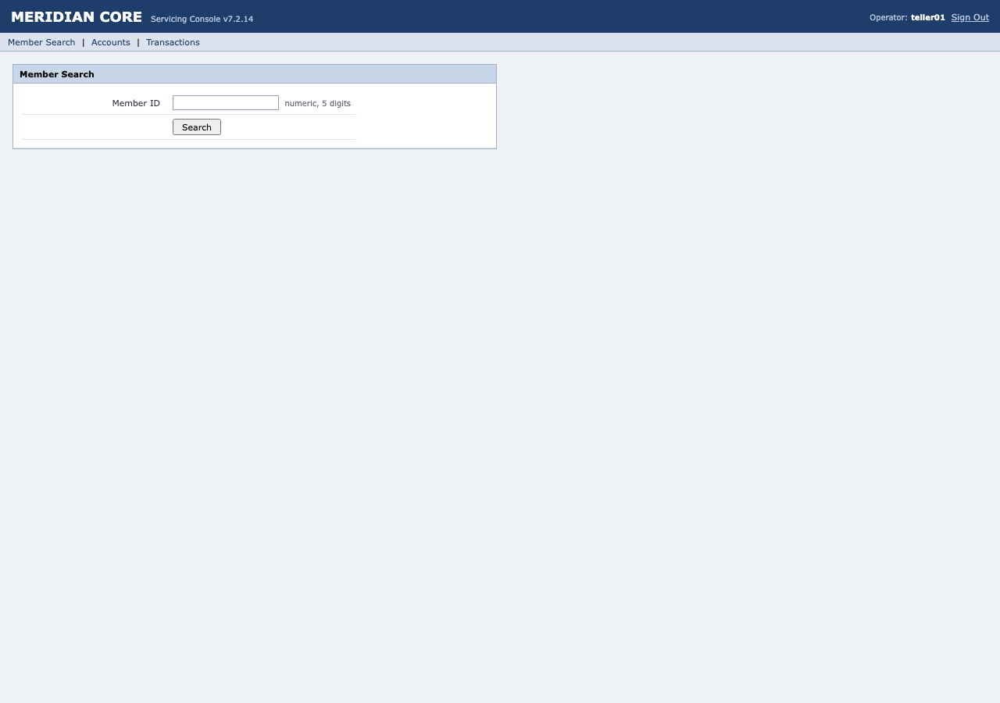

6. Search for the member ok
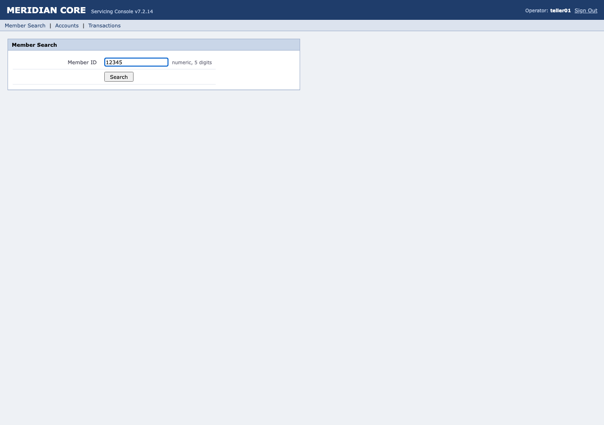

7. Open a new sub-account for the member ok
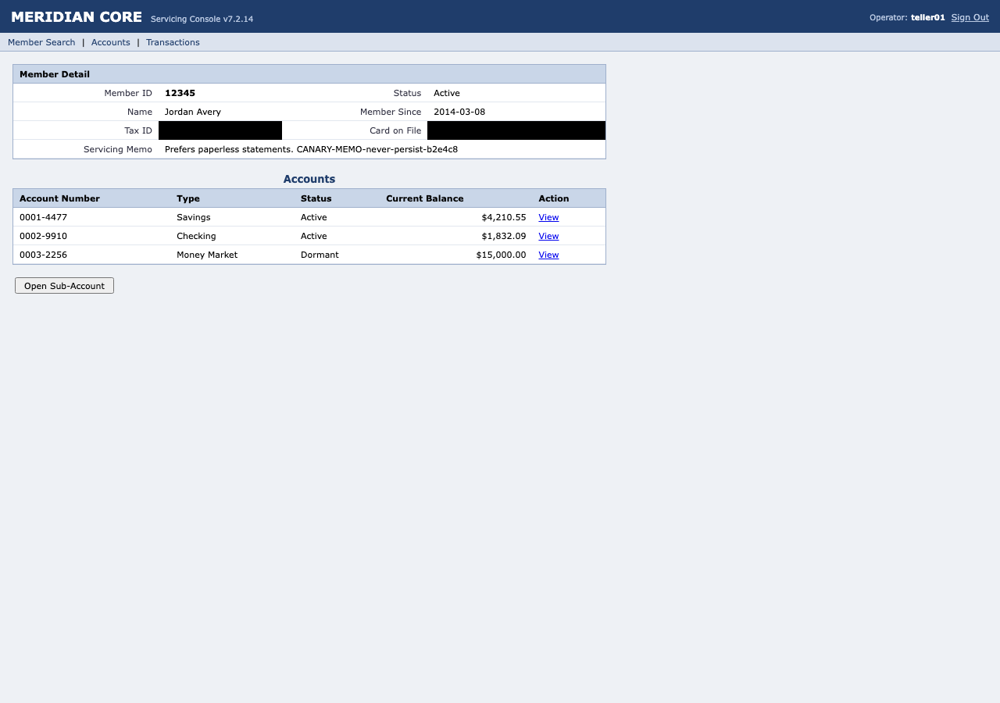

8. Select sub-account type ok
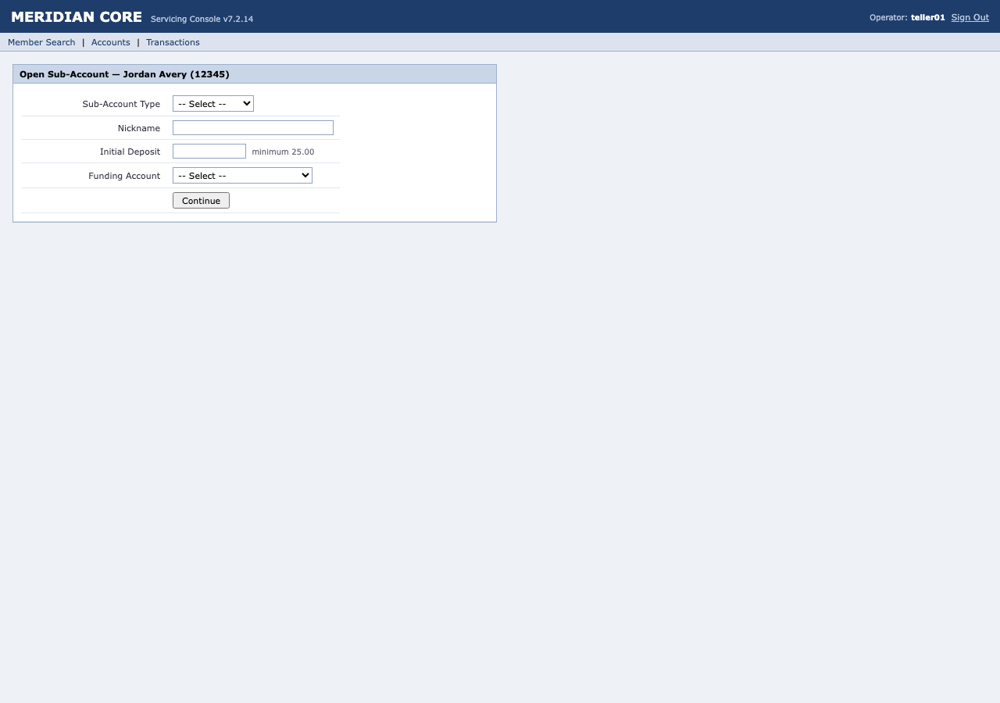
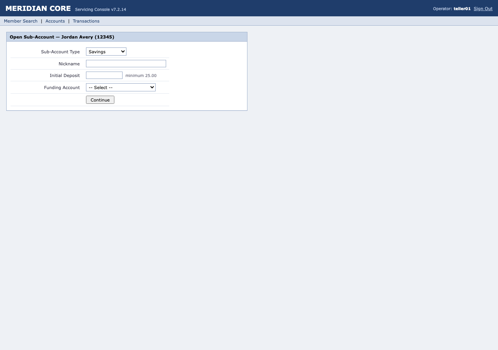
9. Enter nickname for sub-account ok

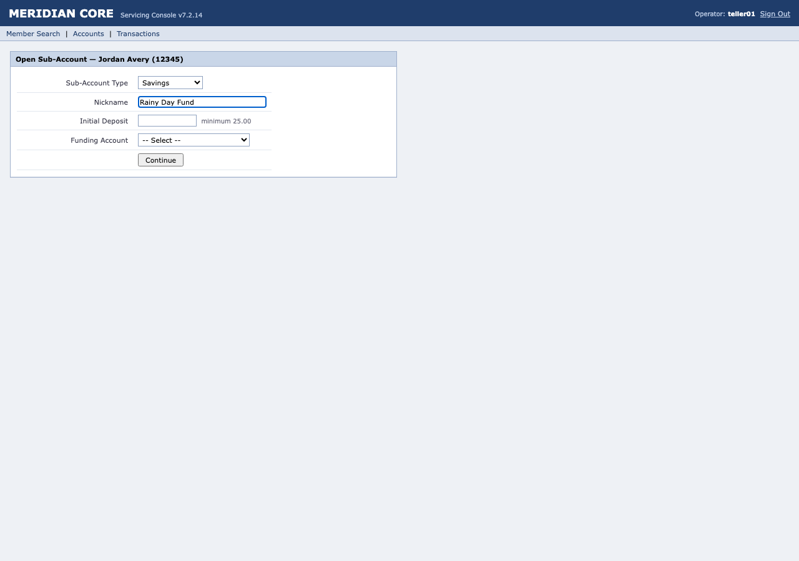
10. Enter initial deposit amount ok

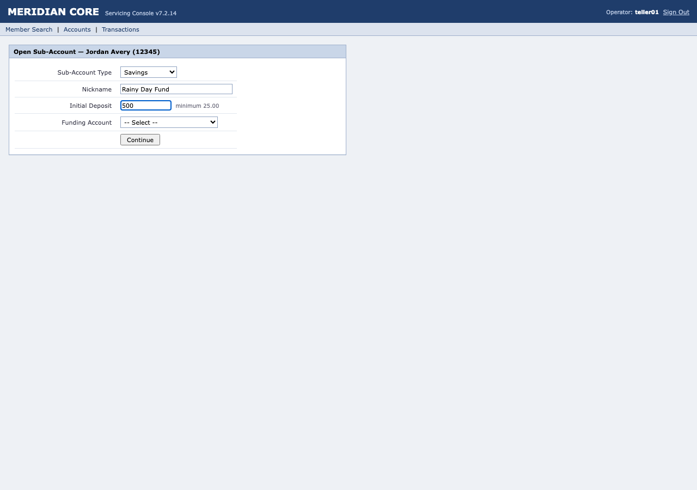
11. Select the funding account ok

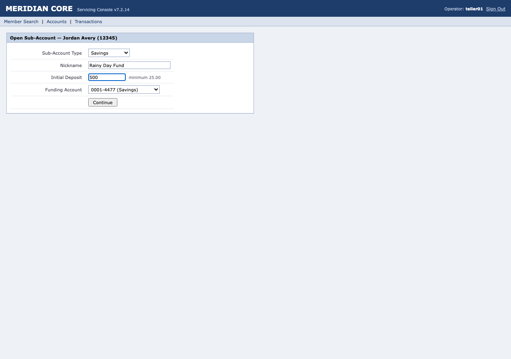
12. Proceed to confirm sub-account opening ok


13. Confirm and open the sub-account ok
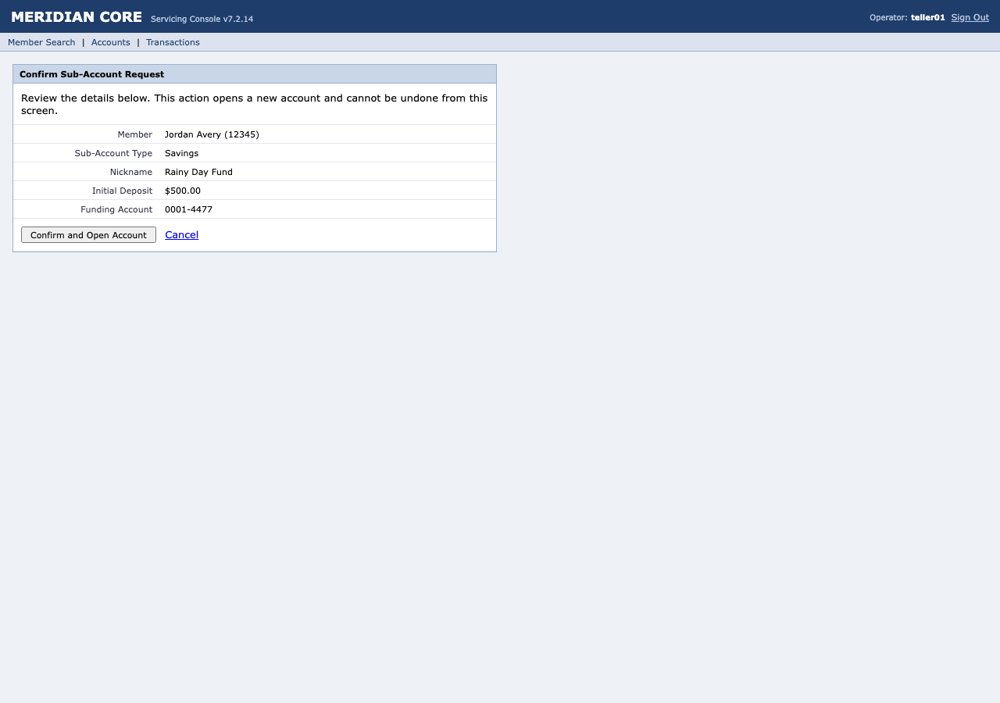

14. Record the reference number for the sub-account opening ok


15. Record the new sub-account number ok
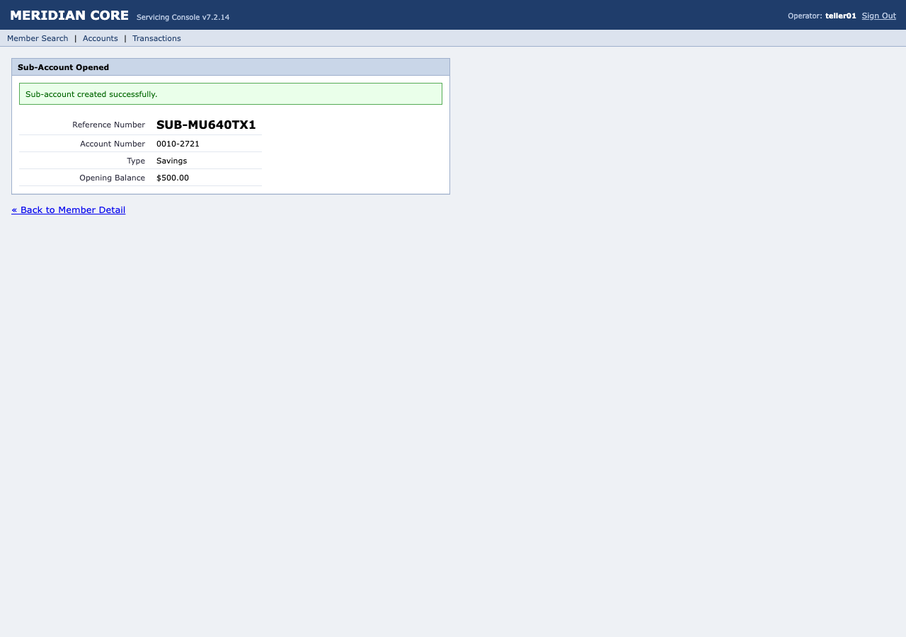

Event log
| # | time | kind | step | what happened, and why |
|---|---|---|---|---|
| 1 | 22:37:11.342 | run.start | Replaying cap.member.open_subaccount v1.0.0 (draft), with no model in the loop. | |
| 2 | 22:37:11.400 | observe | Entered at http://localhost:4400/. | |
| 3 | 22:37:11.400 | step.begin | s1 | Step 1: Open the banking console |
| 4 | 22:37:11.425 | policy.check | s1 | Policy allows this read action. |
| 5 | 22:37:11.433 | action | s1 | Navigated. |
| 6 | 22:37:11.446 | wait | s1 | The expected change happened after 0ms. |
| 7 | 22:37:11.446 | checkpoint | s1 | Checkpoint held: "Enter operator ID" is present |
| 8 | 22:37:11.458 | step.end | s1 | Step 1 ok. |
| 9 | 22:37:11.458 | step.begin | s2 | Step 2: Enter operator ID |
| 10 | 22:37:11.474 | locator.resolve | s2 | Found Enter operator ID via tier 1. |
| 11 | 22:37:11.474 | policy.check | s2 | Policy allows this write_reversible action. |
| 12 | 22:37:11.499 | action | s2 | Typed into on "Operator ID". |
| 13 | 22:37:11.841 | checkpoint | s2 | Checkpoint held: "Enter operator ID" is present |
| 14 | 22:37:11.865 | step.end | s2 | Step 2 ok. |
| 15 | 22:37:11.865 | step.begin | s3 | Step 3: Enter operator password |
| 16 | 22:37:11.896 | locator.resolve | s3 | Found Enter operator password via tier 1. |
| 17 | 22:37:11.896 | policy.check | s3 | Policy allows this write_reversible action. |
| 18 | 22:37:11.929 | action | s3 | Typed into on "Password". |
| 19 | 22:37:12.277 | checkpoint | s3 | Checkpoint held: "Enter operator password" is present |
| 20 | 22:37:12.299 | step.end | s3 | Step 3 ok. |
| 21 | 22:37:12.299 | step.begin | s4 | Step 4: Sign in to the console |
| 22 | 22:37:12.328 | locator.resolve | s4 | Found Sign in to the console via tier 1. |
| 23 | 22:37:12.329 | policy.check | s4 | Policy allows this read action. |
| 24 | 22:37:12.382 | action | s4 | Clicked on "Sign In". |
| 25 | 22:37:12.414 | wait | s4 | The expected change happened after 0ms. |
| 26 | 22:37:12.415 | checkpoint | s4 | Checkpoint held: "Search for the member" is present |
| 27 | 22:37:12.444 | step.end | s4 | Step 4 ok. |
| 28 | 22:37:12.444 | step.begin | s5 | Step 5: Search for the member |
| 29 | 22:37:12.478 | locator.resolve | s5 | Found Search for the member via tier 1. |
| 30 | 22:37:12.478 | policy.check | s5 | Policy allows this write_reversible action. |
| 31 | 22:37:12.486 | action | s5 | Typed into on "Member ID". |
| 32 | 22:37:12.836 | checkpoint | s5 | Checkpoint held: "Search for the member" = "12345" (wanted "12345") |
| 33 | 22:37:12.866 | step.end | s5 | Step 5 ok. |
| 34 | 22:37:12.866 | step.begin | s6 | Step 6: Search for the member |
| 35 | 22:37:12.913 | locator.resolve | s6 | Found Search for the member via tier 1. |
| 36 | 22:37:12.914 | policy.check | s6 | Policy allows this read action. |
| 37 | 22:37:12.970 | action | s6 | Clicked on "Search". |
| 38 | 22:37:12.987 | wait | s6 | The expected change happened after 1ms. |
| 39 | 22:37:12.987 | checkpoint | s6 | Checkpoint held: "Open a new sub-account for the member" is present |
| 40 | 22:37:13.013 | step.end | s6 | Step 6 ok. |
| 41 | 22:37:13.013 | step.begin | s7 | Step 7: Open a new sub-account for the member |
| 42 | 22:37:13.046 | locator.resolve | s7 | Found Open a new sub-account for the member via tier 1. |
| 43 | 22:37:13.046 | policy.check | s7 | Policy allows this write_reversible action. |
| 44 | 22:37:13.099 | action | s7 | Clicked on "Open Sub-Account". |
| 45 | 22:37:13.115 | wait | s7 | The expected change happened after 0ms. |
| 46 | 22:37:13.115 | checkpoint | s7 | Checkpoint held: "Select sub-account type" is present |
| 47 | 22:37:13.144 | step.end | s7 | Step 7 ok. |
| 48 | 22:37:13.144 | step.begin | s8 | Step 8: Select sub-account type |
| 49 | 22:37:13.177 | locator.resolve | s8 | Found Select sub-account type via tier 1. |
| 50 | 22:37:13.177 | policy.check | s8 | Policy allows this write_reversible action. |
| 51 | 22:37:13.181 | action | s8 | Selected an option in on "Sub-Account Type". |
| 52 | 22:37:13.188 | wait | s8 | The expected change happened after 0ms. |
| 53 | 22:37:13.188 | checkpoint | s8 | Checkpoint held: "Enter nickname for sub-account" is present |
| 54 | 22:37:13.227 | step.end | s8 | Step 8 ok. |
| 55 | 22:37:13.227 | step.begin | s9 | Step 9: Enter nickname for sub-account |
| 56 | 22:37:13.260 | locator.resolve | s9 | Found Enter nickname for sub-account via tier 1. |
| 57 | 22:37:13.260 | policy.check | s9 | Policy allows this write_reversible action. |
| 58 | 22:37:13.265 | action | s9 | Typed into on "Nickname". |
| 59 | 22:37:13.613 | checkpoint | s9 | Checkpoint held: "Enter nickname for sub-account" = "Rainy Day Fund" (wanted "Rainy Day Fund") |
| 60 | 22:37:13.651 | step.end | s9 | Step 9 ok. |
| 61 | 22:37:13.652 | step.begin | s10 | Step 10: Enter initial deposit amount |
| 62 | 22:37:13.698 | locator.resolve | s10 | Found Enter initial deposit amount via tier 1. |
| 63 | 22:37:13.699 | policy.check | s10 | Policy allows this write_reversible action. |
| 64 | 22:37:13.707 | action | s10 | Typed into on "Initial Deposit". |
| 65 | 22:37:14.073 | checkpoint | s10 | Checkpoint held: "Enter initial deposit amount" = "500" (wanted "500") |
| 66 | 22:37:14.100 | step.end | s10 | Step 10 ok. |
| 67 | 22:37:14.100 | step.begin | s11 | Step 11: Select the funding account |
| 68 | 22:37:14.148 | locator.resolve | s11 | Found Select the funding account via tier 1. |
| 69 | 22:37:14.148 | policy.check | s11 | Policy allows this write_reversible action. |
| 70 | 22:37:14.152 | action | s11 | Selected an option in on "Funding Account". |
| 71 | 22:37:14.159 | wait | s11 | The expected change happened after 1ms. |
| 72 | 22:37:14.159 | checkpoint | s11 | Checkpoint held: "Proceed to confirm sub-account opening" is present |
| 73 | 22:37:14.196 | step.end | s11 | Step 11 ok. |
| 74 | 22:37:14.196 | step.begin | s12 | Step 12: Proceed to confirm sub-account opening |
| 75 | 22:37:14.229 | locator.resolve | s12 | Found Proceed to confirm sub-account opening via tier 1. |
| 76 | 22:37:14.229 | policy.check | s12 | Policy allows this read action. |
| 77 | 22:37:14.260 | action | s12 | Clicked on "Continue". |
| 78 | 22:37:14.384 | wait | s12 | The expected change happened after 119ms. |
| 79 | 22:37:14.384 | checkpoint | s12 | Checkpoint held: "Confirm and open the sub-account" is present |
| 80 | 22:37:14.414 | step.end | s12 | Step 12 ok. |
| 81 | 22:37:14.414 | step.begin | s13 | Step 13: Confirm and open the sub-account |
| 82 | 22:37:14.447 | locator.resolve | s13 | Found Confirm and open the sub-account via tier 1. |
| 83 | 22:37:14.447 | policy.check | s13 | Policy allows this write_irreversible action. |
| 84 | 22:37:14.476 | action | s13 | Clicked on "Confirm and Open Account". |
| 85 | 22:37:14.598 | wait | s13 | The expected change happened after 116ms. |
| 86 | 22:37:14.598 | checkpoint | s13 | Checkpoint held: "Confirm the sub-account was created successfully" reads "Sub-account created successfully." (wanted /Sub-account created successfully\./) |
| 87 | 22:37:14.612 | step.end | s13 | Step 13 ok. |
| 88 | 22:37:14.613 | step.begin | s14 | Step 14: Record the reference number for the sub-account opening |
| 89 | 22:37:14.629 | locator.resolve | s14 | Found value of referenceNumber via tier 3. |
| 90 | 22:37:14.629 | policy.check | s14 | Policy allows this read action. |
| 91 | 22:37:14.629 | action | s14 | Read on "SUB-MU640TX1". |
| 92 | 22:37:14.988 | checkpoint | s14 | Checkpoint held: "value of referenceNumber" is present |
| 93 | 22:37:14.994 | extract | s14 | Read referenceNumber. |
| 94 | 22:37:15.016 | step.end | s14 | Step 14 ok. |
| 95 | 22:37:15.016 | step.begin | s15 | Step 15: Record the new sub-account number |
| 96 | 22:37:15.047 | locator.resolve | s15 | Found value of accountNumber via tier 3. |
| 97 | 22:37:15.047 | policy.check | s15 | Policy allows this read action. |
| 98 | 22:37:15.047 | action | s15 | Read on "0010-2721". |
| 99 | 22:37:15.406 | checkpoint | s15 | Checkpoint held: "value of accountNumber" is present |
| 100 | 22:37:15.410 | extract | s15 | Read accountNumber. |
| 101 | 22:37:15.432 | step.end | s15 | Step 15 ok. |
| 102 | 22:37:15.432 | run.end | Completed 15 steps and extracted 2 output(s). |